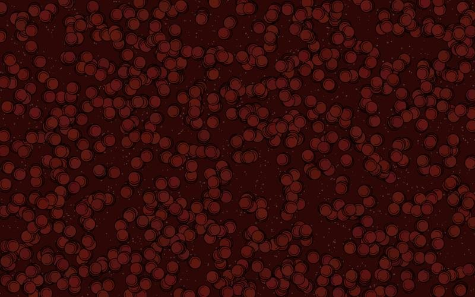

Aula 1 — Código Criativo I
H2I
Learning Materials · André Rocha
Unidades curriculares
Design de Produto e Interação I
Design de Inovação
Arquivo
Design de Produto IV · 25/26
Prototipagem Digital · 25/26
Recursos
CC BY 4.0 · 2026 André Rocha